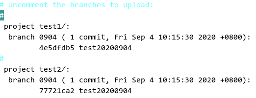
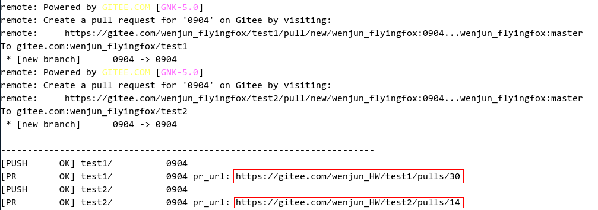

Contribution Process¶
Preparations¶
Install, configure, and use Git. For details, visit https://gitee.com/help/categories/43.
Register an SSH public key. For details, visit https://gitee.com/help/articles/4181.
Find the repository that you are interested in on the code hosting platform of OpenHarmony.
Downloading Code¶
Forking a Code Branch from the Cloud¶
Find and open the homepage of the repository.
Click the Fork button in the upper right corner, and create an individual cloud fork branch as prompted.
Downloading the Fork Repository to the Local Host¶
Perform the following steps to download the code in the repository to your computer:
Create a local working directory.
A local working directory is used for searching and managing local code.
mkdir ${your_working_dir}Clone the remote repository to the local host.
Switch to the local path.
mkdir -p ${your_working_dir} cd ${your_working_dir}Clone the remote repository.
You can copy the address of the remote repository on the repository page.
Figure 1
Run the following command on the local host:
git clone $remote_link
Using the repo Tool to Download Code Repositories in Batches¶
Download the repo tool. (For details, see https://gitee.com/help/articles/4316.)
curl https://gitee.com/oschina/repo/raw/fork_flow/repo-py3 > /usr/local/bin/repo chmod a+x /usr/local/bin/repo pip install -i https://pypi.tuna.tsinghua.edu.cn/simple requests
Download code repositories. (There is no repo branch parameter.)
repo init -u https://gitee.com/openharmony/manifest.git -b master repo sync -c
Committing Code¶
Committing a Repository (git clone)¶
Update the branch.
Update your local branch.
git fetch origin git checkout master git pull --rebase
Update the local debugging branch (myfeature branch) based on the remote master branch.
git branch myfeature origin/master git checkout myfeature
Then, edit and modify the code in the myfeature branch.
Commit the changes in the local working directory.
git add . git commit -m "Reason"
You may continue to edit and test more content after the previous commit. You can use commit –amend to commit these changes.
Push the changes to your remote directory.
If you plan to review (or just establish a remote backup of your work), push the branch to your fork repository:
git push -f origin myfeature
Committing Multiple Repositories (repo init/sync)¶
Configure the token of the global environment.
repo config --global repo.token {TOKEN}
The token is generated by choosing Settings > Security Settings > Private Token on Gitee. Example:
repo config --global repo.token 211XXXXXXXXXXXXXXXXXXXXXXXX
Create an issue under any repository to be modified on Gitee, and record the issue number (for example, #I1TVV4 in the following figure). (The issue provides a function similar to changeID of Gerrit and is used to associate multiple repositories to be modified. Skip this step if modification of multiple repositories is not involved.)
Create a branch in the local code workspace, modify the code, and commit the changes.
repo start branchname --all
After the code is modified, run the following command in multiple repositories:
git add .
git commit -m "xxxxxx"
Alternatively, use the repo tool to batch add or commit the changes in the root directory of the code project:
repo forall -c 'git add .'
repo forall -c 'git commit -m "xxxxxx"'
Push the code. (repo upload is not supported.)
Specify whether to directly generate a pull request (PR) during code push. The value False indicates that a PR is not directly generated and needs to be manually generated in the fork warehouse. The value True indicates that a PR is generated when the code is pushed to the fork repository.
repo config repo.pullrequest {True/False}
For example, if the PR is generated when the push code is selected, run the following command:
repo config repo.pullrequest True
Run the following command to push the code:
repo push --br={BRANCH} --d={DEST_BRANCH} --content={PR_CONTENT}
BRANCH indicates the local branch, DEST_BRANCH indicates the destination branch (trunk branch), which is usually master, and PR_CONTENT indicates the PR description. If multi-repository committing is involved, the issue number must be entered. Example:
repo push --br="20200903" --d="master" --content="#I1TVV4"
On the editing page displayed, open the comment tags for the repository, branch, and commit.

Save the settings and exit. The repo tool automatically pushes the local branch to the remote fork repository (creates a fork repository if there is no fork repository) and generates a PR.

The tool automatically associates the PR with the issue.
Creating a Pull Request¶
Access the fork repository on Gitee, click the button for creating a PR, and select the myfeature branch to generate a PR. (Skip this step if a PR has been automatically created using the repo tool.)
For details, visit https://gitee.com/help/articles/4128.
NOTICE: How do I create PRs at the same time if multiple code repositories have compilation dependencies? During the development of the operating system (OS), it is common that multiple code repositories have compilation dependencies. Therefore, the PRs need to be created and merged at the same time. For this reason, Gitee uses issues as the dependency identifiers for code repositories with compilation dependencies to commit the PRs. Follow the operations below: 1. Create an issue in any of the code repositories. 2. Associate PRs that need to be built and merged at the same time with the issue. For details, visit https://gitee.com/help/articles/4142. 3. After the build is triggered, the build center identifies the PRs associated with the same issue, downloads the build, and merges the PRs into the code library after the code is approved.
Building Access Control¶
Creating an Issue¶
Go to the homepage of the repository.
Click the Issues tab in the upper left corner. Then, click the issue creation button on the right, and create a dedicated task as prompted to execute continuous integration (CI) access control for associated code (feature development/bug fixing).
Associating the Issue with the PR¶
When creating a PR or compiling an existing PR, enter #+I+five-digit issue ID in the description box to associate the issue with the PR.
Constraints
One PR can be associated with only one issue. Otherwise, CI cannot be triggered.
If feature development or bug fixing involves multiple code repositories, multiple PRs can be associated with the same issue.
Among the PRs associated with the issue, no PR that has been merged or closed is allowed. Otherwise, the CI cannot be triggered.
If an issue has been associated with a merged or closed PR, the issue cannot be reused. In this case, create another issue and associate it with an open PR.
Triggering Code Access Control¶
Comment “start build” in the PR to trigger CI access control.
If multiple PRs are associated with the same issue, the comment “start build” on any PR can trigger the CI access control of the issue.
After the access control is executed, the execution result will be automatically commented in all the PRs associated with the issue.
If the access control is passed, all PRs associated with the issue will be automatically marked as “Passed”.